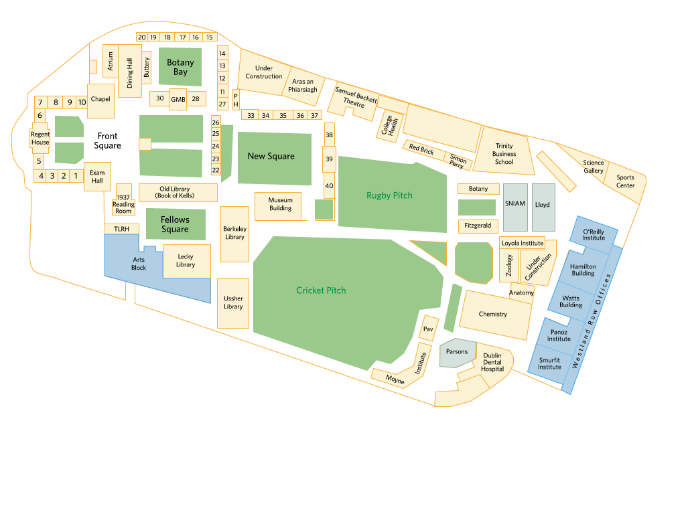

This map is a work in progress. This is the prelive version of the map
I will accept help in any form. If you can use microsoft paint you can help with this project
If you can use Adobe Illustrator that'd be absolutely ideal
https://github.com/dangoreilly/tcd-map
Progress:
Arts - Fully mapped and linked
Hamilton - Ground floor and basement mapped, upper floors partially mapped. No linking yet.
SNIAM - TBD
Lloyd - TBD
Parsons - TBD
Click/tap on the building to enter it and then click on stairs or lifts to move up and down.
Off colour buildings are being worked on, the rest will hopefully be worked on in due time.
-Dan
[Last Updated 09/10/21]